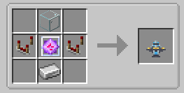
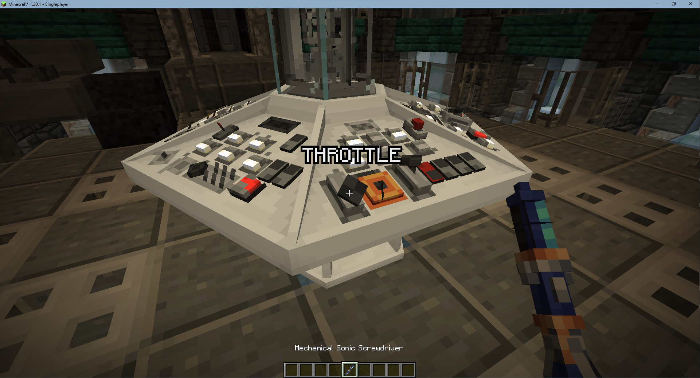
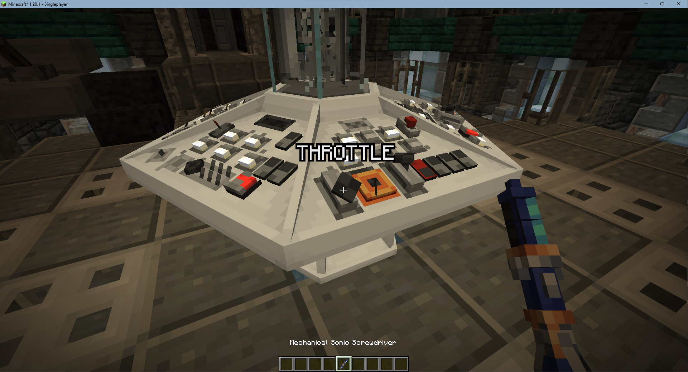

Craft a Console
Create a console using the recipe on the right
Place down the console inside the TARDIS interior
The console will require the TARDIS to have fuel in order for most functions to work properly
Knowing what does what
Instead of trial and error to find out what the controls do, you can hover over the controls with a Sonic Screwdriver in scanning mode to see their function
Customising the console
todo - replace this when a proper way is implemented
To change the consoles type, right click the block with a stick
To change the consoles variant, right click the block with a bone
To remove a console, right click the block with shears
Linking to a TARDIS
To link items to a TARDIS, hold the item in your hand and shift right click the console


